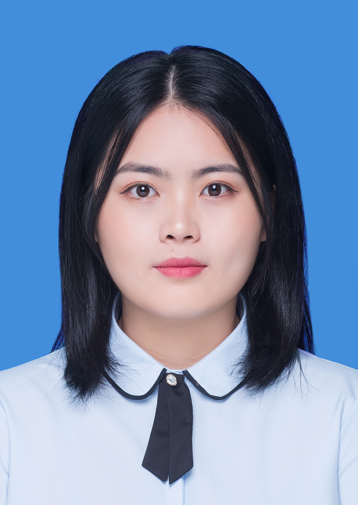

My Resume
| 姓名 | 蒋晓琳 | 性别 | 女 |  |
|---|---|---|---|---|
| 出生年月 | 2002-10-16 | 籍贯 | 广东省珠海市香洲区 | |
| 政治面貌 | 共青团员 | 民族 | 汉族 | |
| 联系电话 | 18023098125 | 邮箱 | 867555250@qq.com | |
| 就读院校 | 中南财经政法大学 | 专业 | 大数据管理与应用（辅修金融工程） | |
| 学历 | 本科 | 求职意向 | 都可以 | |
| 家庭住址 | 广东省珠海市香洲区狮山街道 | |||
| 个人经历 | 起止时间 | 工作单位 | 职务 | 工作情况 |
| 2014-2017 | 珠海市文园中学 | 班长 | 优秀 | |
| 2017-2020 | 珠海一中 | 无 | 优秀 | |
| 2020-2024 | 中南财经政法大学 | 院学生会秘书处负责人 | 优秀 | |
| 个人能力 | 本科阶段成绩优秀；可以独立处理突发事件，人际交往能力良好。 | |||
| 兴趣 | 打球，摄影，阅读。 | |||
| 个人评价 | 有较强的的学习能力和一定的抗压能力，在大学期间获得过一些奖项 | |||